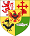

Глен-Мор
Глен-Мор (англ. Glen More, гэльск. Gleann Mòr), также Грейт-Глен (англ. Great Glen) — узкая долина на севере острова Великобритания, расположена в тектонической впадине, которая проходит по Северо-Шотландскому нагорью и разделяет его на северо-западную часть и Грампианские горы. Долина тянется 97 км с северо-востока на юго-запад — от залива Мори-Ферт у города Инвернесс до залива Лох-Линне у Форт-Уильяма. Находится на территории крупнейшей области Шотландии Хайленд. Крайние точки долины соединены судоходным Каледонским каналом, который проходит по озёрам ледникового происхождения Лох-Несс, Лох-Ойх и Лох-Лохи. Поверхность низменности занимают торфяники и вересковые пустоши. У южного окончания долины находится высочайшая вершина Великобритании — гора Бен-Невис.
Гленко
Более правильная транскрипция «Глен Коэ» — англ. glen — узкая горная долина, Coe — её название (аналогично Loch — озеро (или другое водное пространство, например, залив) в Шотландии — Лох-Несс, Лох-Ломонд и т. д.) Но обычно традиционно упоминается как «Гленко».
Название «Coe» происходит от имени реки «Coe», протекающей в долине. Этот гидроним догэльского происхождения и значение его не известно. Значение гэльского «Comhann» в имени «Gleann Comhann» также не известно. Возможно, что это имя рода или клана, когда-то существовавшего в этой области (менее вероятная версия), или происходит от персонального имени «Chomain» или «Comhan».
Гленко также известна под названием «Долина Слёз», что, скорее всего, связано с печальными событиями 13 февраля 1692 года, известными как резня в Гленко (англ. Massacre of Glencoe), когда в ходе междоусобной борьбы были жестоко убиты более 70 человек из клана МакДональдов  38 человек из них погибли во время резни, ещё сорок женщин и детей умерли после того, как их дома были сожжены. МакДональды погибли от руки правительственных войск, так как ими не была своевременно принесена присяга новому королю, Вильгельму Оранскому.